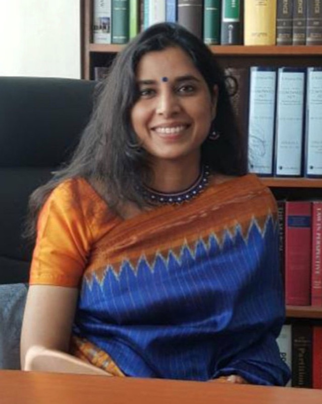
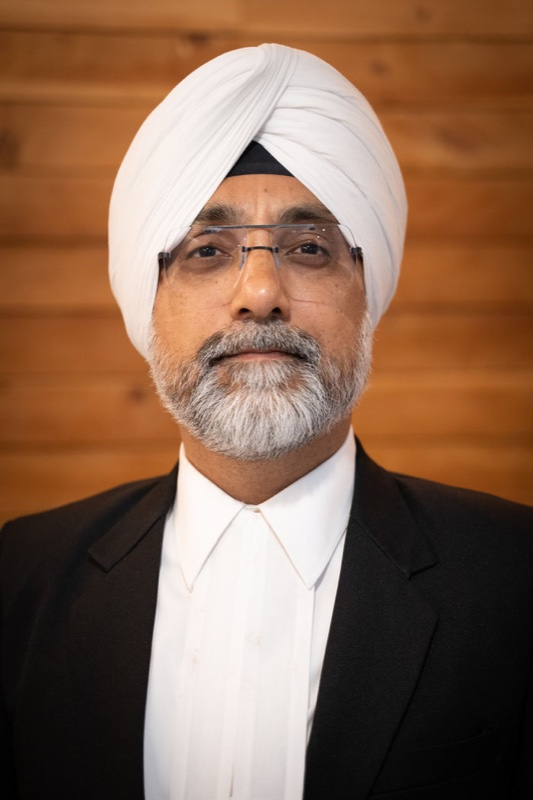
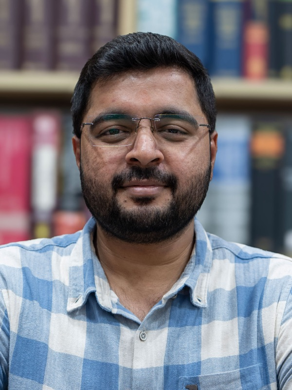
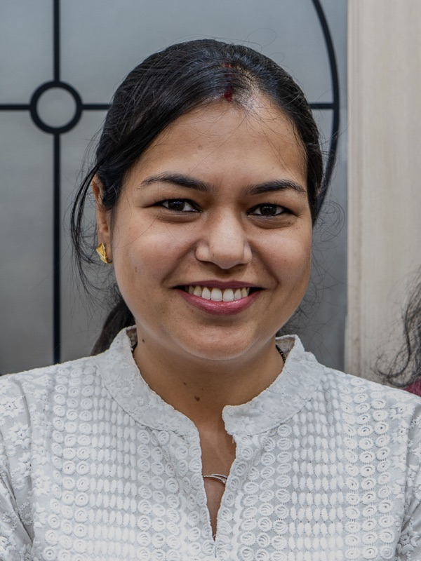
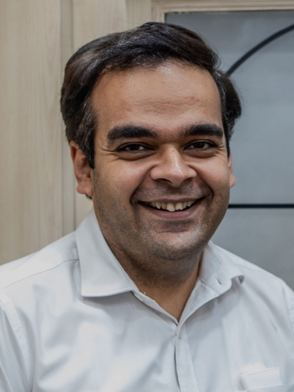
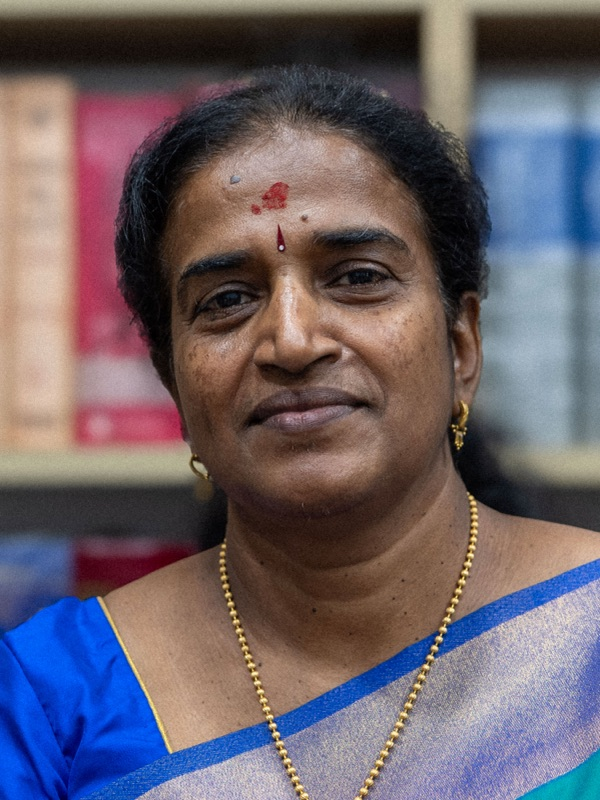
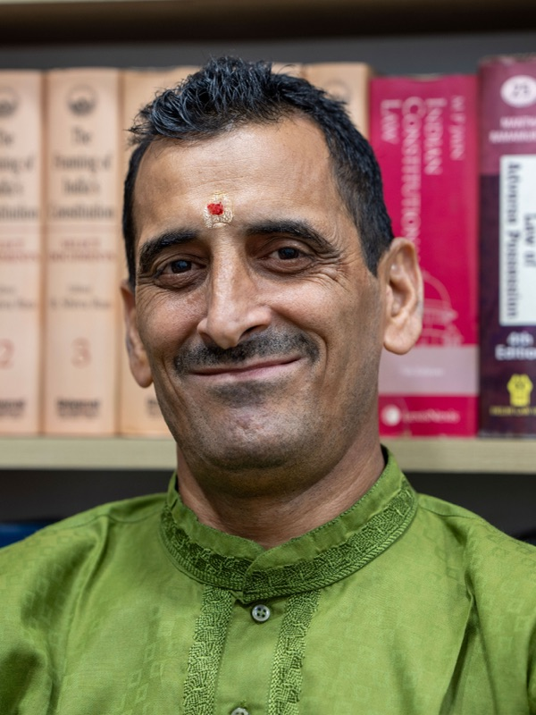
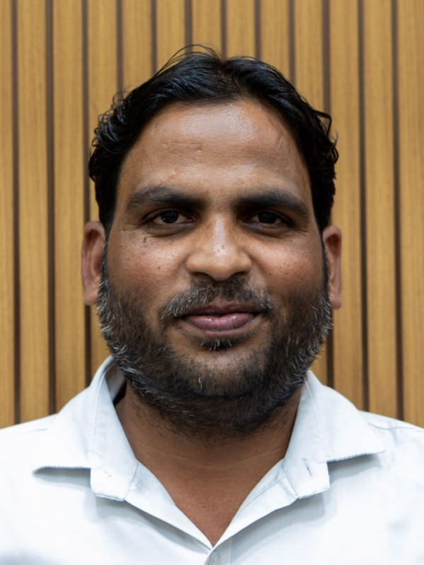

Surekha Raman
Managing Partner
Leads the firm's day-to-day practice and senior client relationships. Heads the firm's institutional engagements.
An independent partnership, deliberately scaled. The firm was founded in 1993 by K. J. John and is today led by Surekha Raman as Managing Partner. Partners lead matters personally, supported by a small bench of associates and a chambers staff that has, in many cases, been with the firm for years.








Amarjit Singh Bedi · Partner
Amarjit is an alumnus of Symbiosis Law School, Pune. He has over twenty-four years of litigation practice and is a gold medallist in the Advocate on Record exam conducted by the Supreme Court of India. He began his career with Mr. Aruneshwar Gupta, then Additional Advocate General for the State of Rajasthan.
Amarjit specialises in commercial litigation and acts as strategic advisor to senior management of his corporate clients. He appears regularly before the Supreme Court of India and various High Courts across India, and before tribunals including the NCLAT, the PMLA Appellate Tribunal, the DRAT and the DRT.
His recent work in the Supreme Court includes SEBI matters such as the Hindenburg–Adani and Karvy proceedings. He serves as General Secretary of the Bar Association of India and is the author of a book on Environment and Pollution Laws. He has taught at the Delhi Police Training College and served as Domestic Consultant for the Asian Development Bank on its Justice Administration project.
Amarjit's clients have included Mahindra & Mahindra, Tata Motors, Reliance Capital, Religare, Cathay Pacific, Binani Cement, Indian Hume Pipe, Triburg Inc. and Wave Bottling, among others. He is proficient in English, Hindi and Punjabi.
Sidharth Nair · Associate
Sidharth holds a B.A. LL.B. degree from Guru Gobind Singh Indraprastha University and is enrolled with the Bar Council of Delhi. He is associated with the firm's Dispute Resolution team, focusing on arbitration and commercial litigation.
His practice includes legal research, drafting, briefing, contract vetting and client negotiation. He appears before the Supreme Court of India, the High Court of Delhi, the National Company Law Appellate Tribunal and the Delhi International Arbitration Centre.
Yashwant Sanjenbam · Associate
Yashwant earned his B.A. LL.B. degree from Lloyd Law College, Greater Noida in 2022, and is enrolled with the Bar Council of Manipur. He initially practised before the High Court of Manipur and now practises in Delhi courts including the Supreme Court, the High Court, the NCDRC, the NCLT and the NCLAT.
His interests are in international arbitration and commercial litigation. During law school, he participated in the Willem C. Vis, FDI, Jessup and Stetson international moot court competitions.
Harshit Singh · Advocate
Harshit earned a B.A. LL.B. (Hons.) degree from Devi Ahilya Vishwavidyalaya in 2022 and was enrolled with the Bar Council of Delhi the same year. He appears before the High Court of Delhi, district courts in the Delhi-NCR region and tribunals including the NCLT and NCLAT.
His practice areas include recovery matters, execution petitions, matrimonial and family law, and real-estate law — particularly RERA complaints and the preparation of due-diligence reports. He is proficient in English and Hindi.
Shreyash Kumar · Advocate
Shreyash holds a B.B.A. LL.B. degree from Symbiosis Law School, Noida (2023) and is enrolled with the Bar Council of Delhi. He focuses on contract vetting, dispute resolution and compliance work, and is regarded within the firm for his legal research and attention to detail.
He appears regularly before the Supreme Court of India, the Delhi High Court, Consumer Commissions and district courts.